Simon Barthelmé (GIPSA-lab, CNRS)
The Canny edge detector is one of the canonical algorithms of computer vision. All implementations I’ve seen use several loops over pixel values. Loops in R are extremely slow, but on the other hand vectorised operations can be pretty fast. In this tutorial I’ll explain how to build a vectorised implementation of the Canny edge detector, in a functional programming style.
I’ll follow the structure of the algorithm as explained on the Wikipedia page.
Noise in the image can cause illusory edges to be detected. The traditional recommendation is Gaussian filtering, which is easy enough:
library(imager)
im <- grayscale(boats) %>% isoblur(2) #2 pix. blur(NB: other filters may actually perform better here, for example the median filter).
The next step is to compute an image gradient, which boils down to:
gr <- imgradient(im,"xy")
plot(gr,layout="row")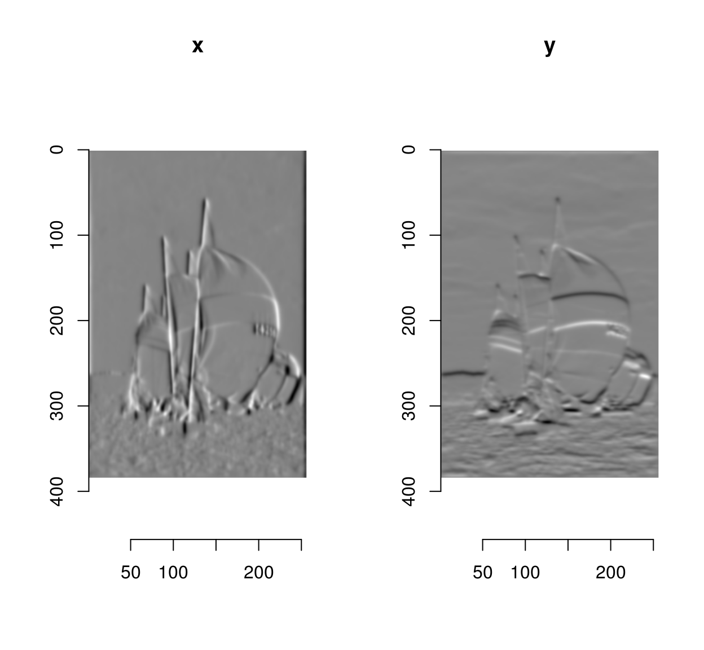
The gradient has two components (the image derivatives along \(x\) and \(y\)), and is stored as an image list, with two components named “x” and “y”.
We can compute the gradient magnitude via:
mag <- with(gr,sqrt(x^2+y^2))
plot(mag)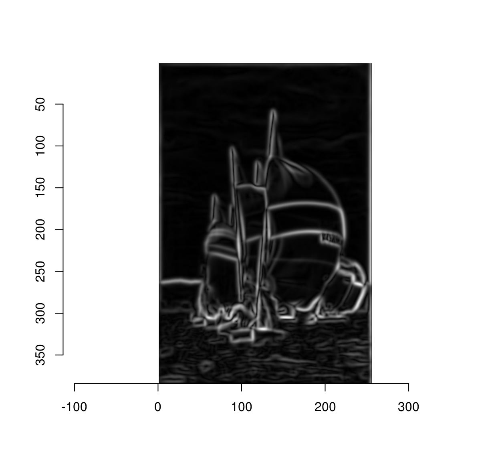
The Canny edge detector is essentially a cleaned-up version of the above picture.
The gradient angle determines the local orientation of image edges:
ang <- with(gr,atan2(y,x))
plot(ang)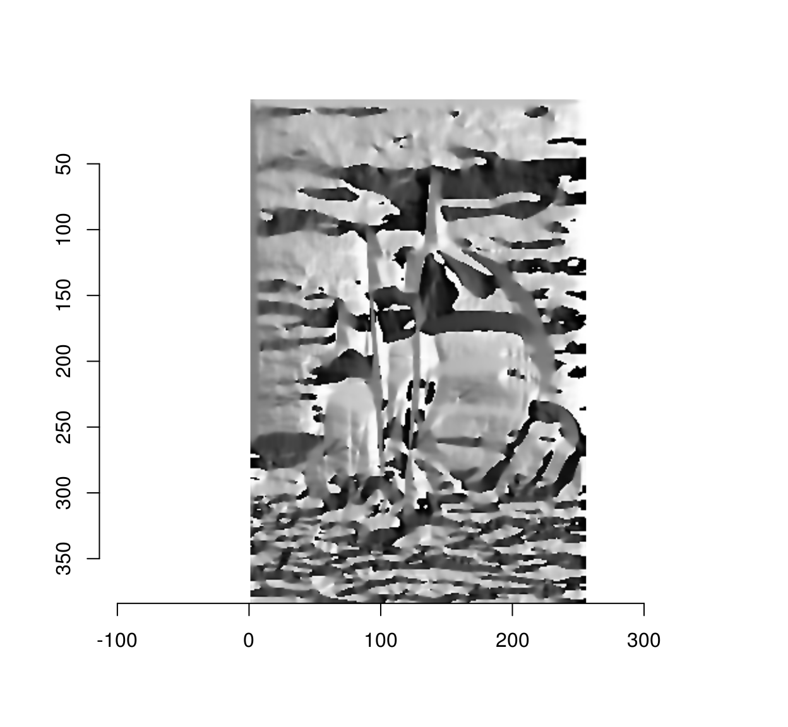
The above figure looks interesting but is hard to read. One of the issues is that an angular variable (taking values in \(-\pi,\pi\) is mapped to a linear scale (black and white correspond to \(-\pi\) and \(\pi\), but \(-\pi\) and \(\pi\) correspond to the same angle). Here it is on a circular colour scale:
cs <- scales::gradient_n_pal(c("red","darkblue","lightblue","red"),c(-pi,-pi/2,pi/2,pi))
plot(ang,colourscale=cs,rescale=FALSE)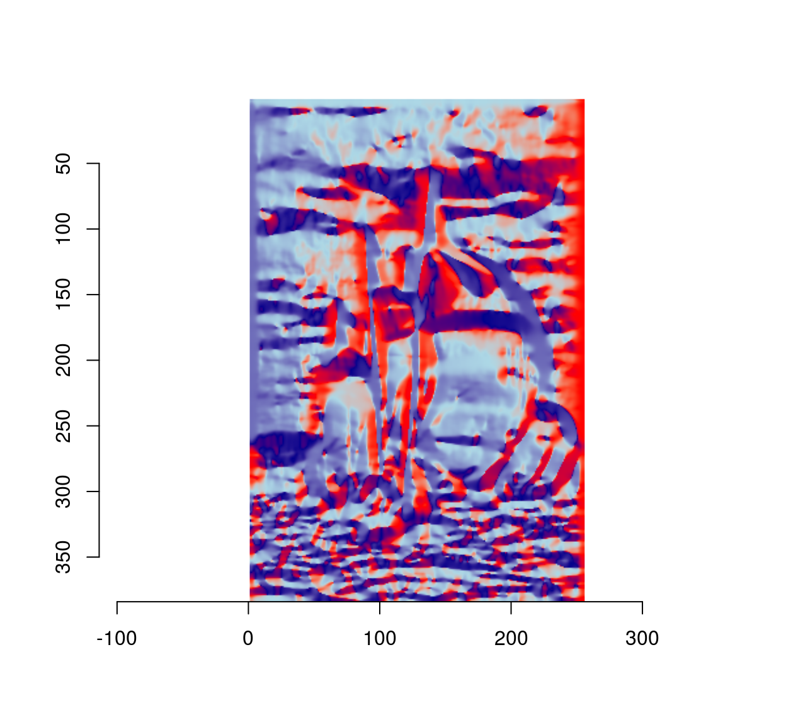
For a better way of visualising image gradients, see here.
The gradient magnitude we plotted above is blurry, and if we threshold it directly we’ll see that some pixels near edges are also labelled as being edges:
threshold(mag) %>% plot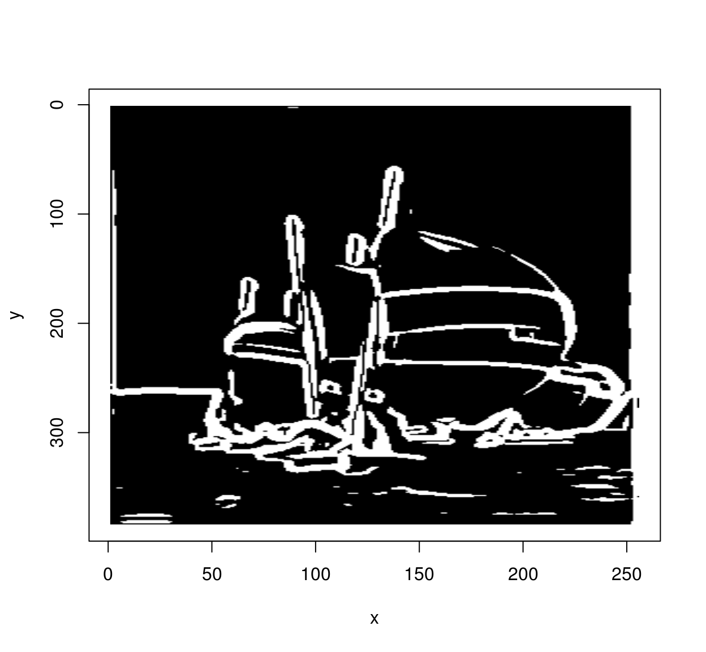
The goal on non-maxima suppression is to eliminate such false positives. To do so we set to 0 all pixels in the gradient magnitude image that are not local maxima along the direction of the gradient. In a C++ implementation you would loop through all the pixels, and check that all the pixels have higher values than their two neighbours in the direction of the gradient. In R that would take ages, so we need to find a way to vectorise that operation. The solution is to use interpolation as a our main vectorised operation. Interpolation returns a list of image values at a set of locations. What we’ll do is take the whole set of pixels, compute a corresponding set of neighbouring locations along the gradients, and see what the image values are at the new locations. For example, here we go see what’s what along the gradient:
#Going along the (normalised) gradient
#Xc(im) is an image containing the x coordinates of the image
nX <- Xc(im) + gr$x/mag
nY <- Yc(im) + gr$y/mag
#nX and nY are not integer values, so we can't use them directly as indices.
#We can use interpolation, though:
val.fwd <- interp(mag,data.frame(x=as.vector(nX),y=as.vector(nY)))We can naturally also go backwards along the gradient:
nX <- Xc(im) - gr$x/mag
nY <- Yc(im) - gr$y/mag
val.bwd <- interp(mag,data.frame(x=as.vector(nX),y=as.vector(nY)))Given these two sets of values, non-maxima suppression comes down to killing all values that aren’t larger than their two neighbours along the flow:
throw <- (mag < val.bwd) | (mag < val.fwd)
mag[throw] <- 0
plot(mag)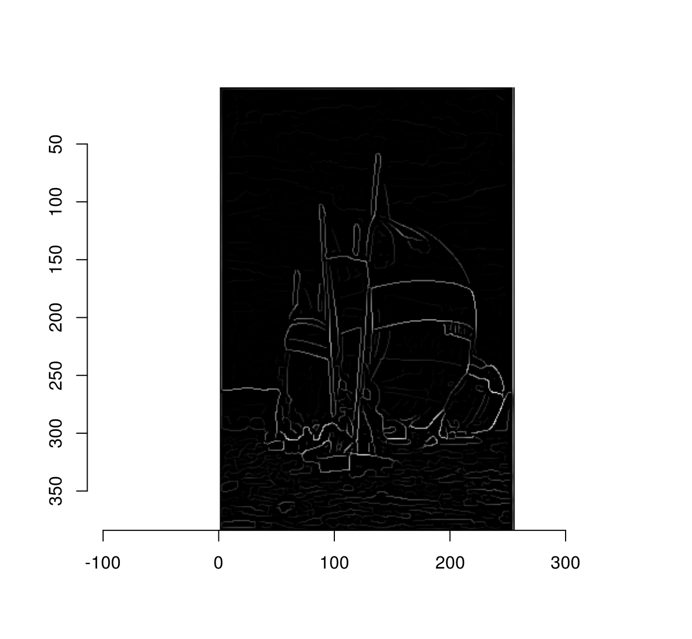
At this stage we’re beginning to see some nice outlines, but the ultimate goal is to classify each pixel as edge/non-edge, which means picking a threshold. Instead of picking a single threshold, Canny suggested picking a double threshold \(t_1,t_2\), with \(t_1 < t_2\), where
Weak edges have a high chance of being false positives, but less so if there’s a strong edge somewhere nearby, because edges are usually continuous. Hysteresis rescues such weak edges progressively. The usual implementation is iterative: you start from a strong edge, look at all its neighbours, and if any of these neighbours is a weak edge you rescue it by labelling it as strong. Again, R is impractically slow for such a process. We can do much better by using morphological dilation as our computational primitive. Morphological dilation takes a B&W image and expands the set of white pixels by using a “structuring element”. In the simplest case the structuring element is a square and dilation corresponds to a kind of convolution: we move the square around, and we label the central element white if there is another white pixel in the square. Here it is at work on a small noise image:
imn <- as.cimg(imnoise(100,100) > 1)
list(imn,dilate_square(imn,2)) %>% imlist %>% plot(layout="row")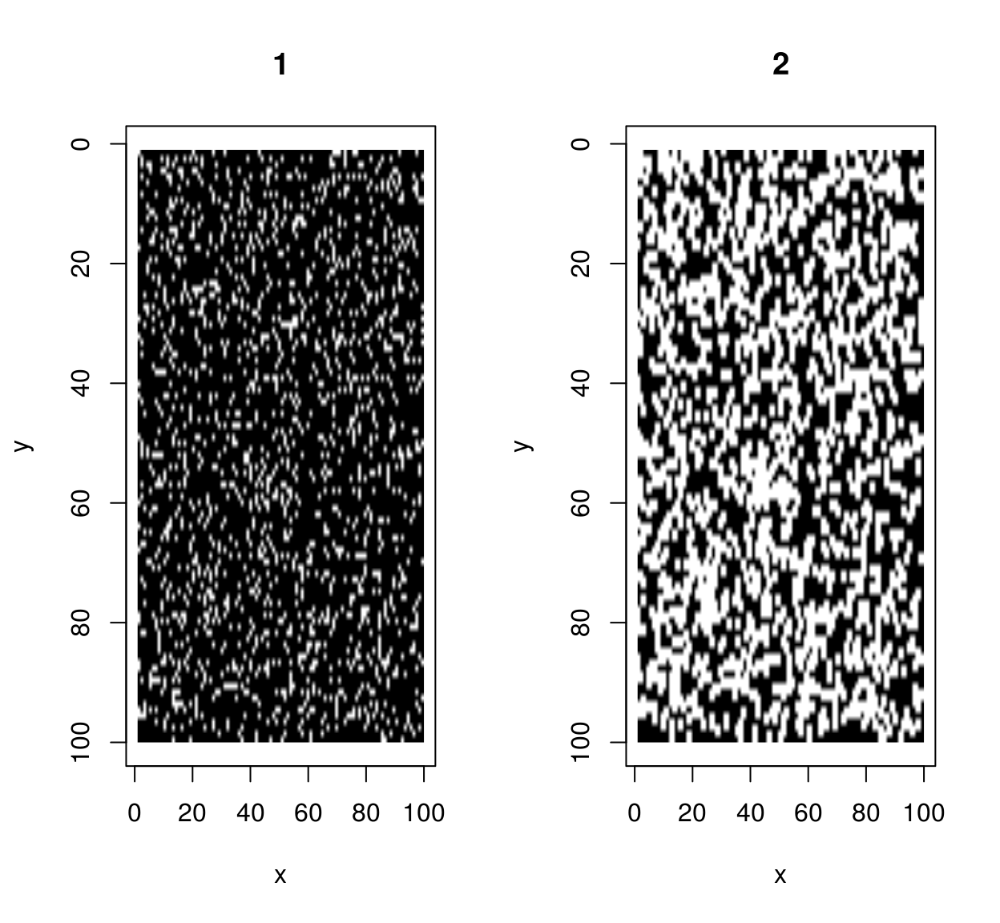
Morphological dilation gives us a way of implementing hysteresis. We start from the set of strong edges, expand it with dilation, and check its overlap with the set of weak-edges. Any points in the overlap can now be labelled “strong”:
#strong threshold
t2 <- quantile(mag,.96)
#weak threshold
t1 <- quantile(mag,.90)
layout(t(1:2))
strong <- as.cimg(mag>t2)
plot(strong,main="Initial set of strong edges")
weak <- as.cimg(mag %inr% c(t1,t2))
overlap <- dilate_square(strong,3)*weak
strong.new <- strong + overlap
plot(strong.new,main="New set of strong edges")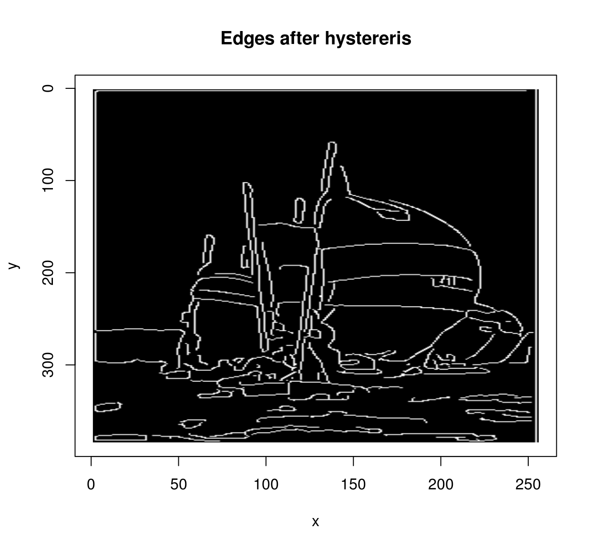
delta <- sum(strong.new)-sum(strong)
delta## [1] 202We have labelled 202 formerly weak edges as strong. There’s no reason to stop here: we can repeat the operation until the set of weak edges stops growing. The hysteresis operation is thus a fixed point iteration, an computation we go on doing until the results stop changing. The package “fixedpoint” provides a convenient mechanism for turning a function into a fixed point iteration.
#run devtools::install_github("dahtah/fixedpoints")
library(fixedpoints)
#Example of a fixed point iteration:
#divide a number by 2 until the result doesn't change
f <- function(x) x/2
g <- fp(f)
g(3) #Run the fixed point iteration from 3.## Result after 29 iterations. Converged: TRUE.
## [1] 5.587935e-09g(0) ## Result after 1 iterations. Converged: TRUE.
## [1] 0In our case the mapping to iterate is the “expansion, relabelling” operation we had above:
#ws is a list containing two fields, "weak" and "strong"
#which are images where all pixels with value 1 are "weak edges" (resp. strong)
#the function expands the set of strong pixels via dilation and overlap
#and returns the expanded strong set and the (shrunk) weak set
expandStrong <- function(ws)
{
overlap <- dilate_square(ws$strong,3)*ws$weak
ws$strong <- ws$strong + overlap
ws$weak <- ws$weak-overlap
ws
}
#hystFP is a new function that will call expandStrong repeatedly until
#the weak and strong sets don't change anymore
hystFP <- fp(expandStrong)
#Call hystFP
out <- list(strong=strong,weak=weak) %>% hystFP
out## Result after 70 iterations. Converged: TRUE.
## $strong
## Image. Width: 256 pix Height: 384 pix Depth: 1 Colour channels: 1
##
## $weak
## Image. Width: 256 pix Height: 384 pix Depth: 1 Colour channels: 1canny <- out$strong
plot(canny,main="Canny edges")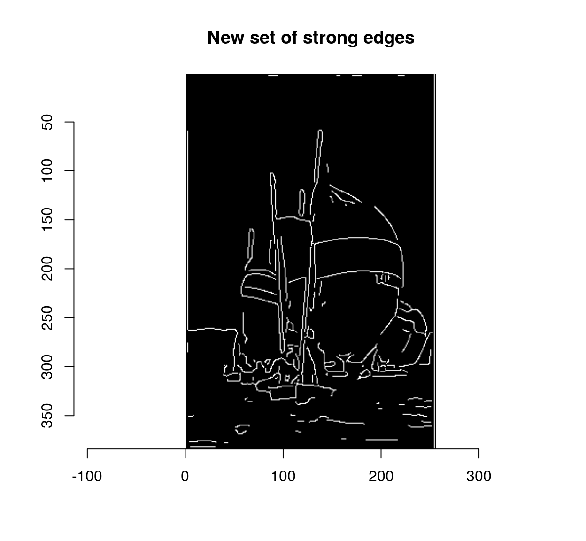
Of course, in a way we are cheating here: the fixed point iteration is really a loop. But instead of looping over each pixel (which is slow, because there are many pixels), we run a global computation on all pixels, 70 times, which is much faster. The fact that it takes 70 iterations to rescue all the weak edges tells us that, in this image at least, some weak edges are hard to reach: there is a connection between the initial set of strong edges and some far-away weak edges. A better computational primitive in this case is the bucket fill (also called the “flood fill”), which you probably know from using your favourite image editor.
im1 <- as.cimg(function(x,y) x == 50,100,100)
layout(t(1:2))
plot(im1,main="Bucket fill initialised at red point")
points(80,80,col="red")
bucketfill(im1,80,80,color=1,high_connex=TRUE) %>% plot(main="Result")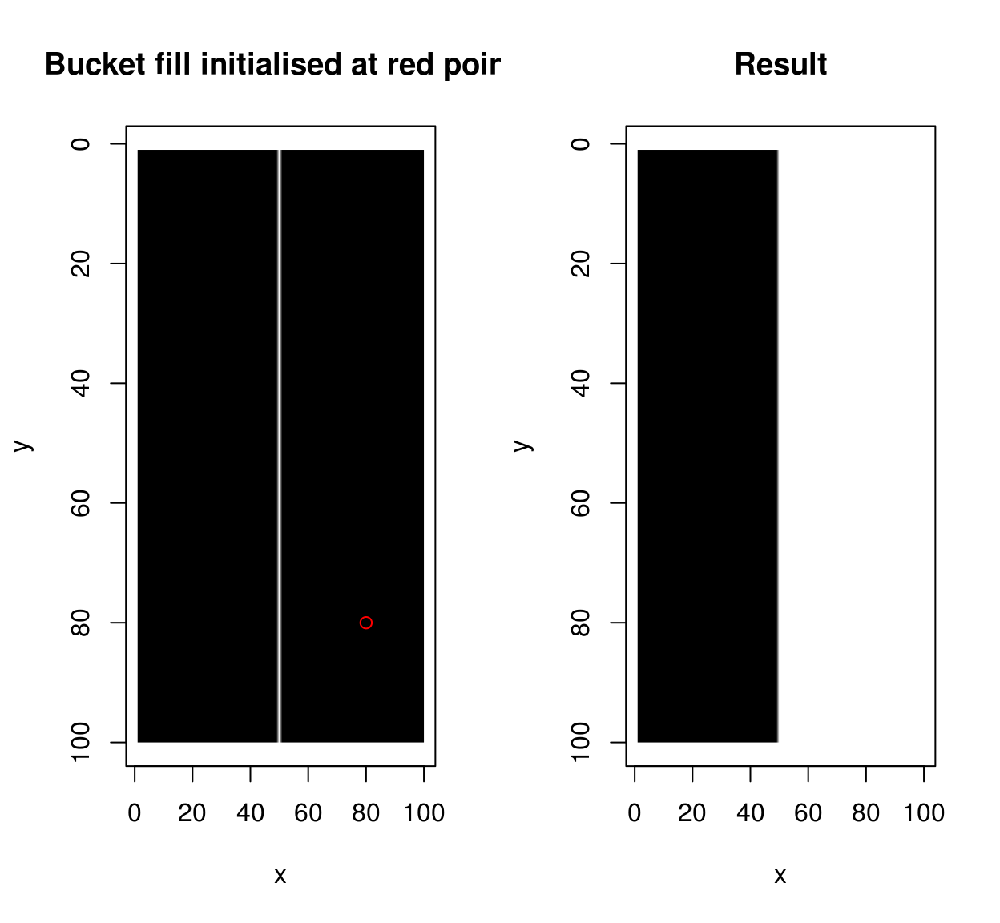
The bucketfill has a tolerance parameter, which sets a stopping criterion: if nearby pixels are more than “sigma” apart in value, they won’t be filled. The trick will consist in starting a bucket fill inside a strong region, and painting nearby weak pixels as strong. If we do this from all strong regions, we’ll have rescued all the weak edges that need to be rescued. To identify all strong regions, we use “label”:
labs <- label(strong,high=TRUE)
suppressWarnings((labs*strong) %>% plot(.,colourscale=scales::div_gradient_pal()))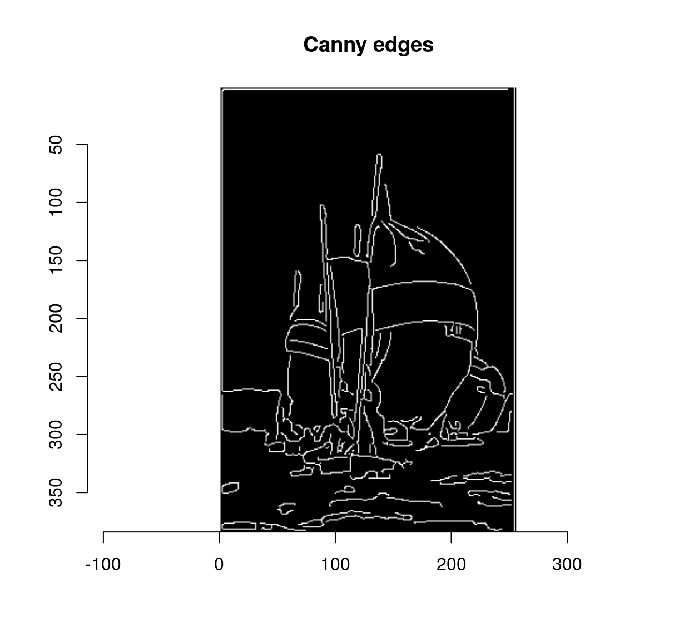
label gives each distinct, connected region an integer label. To obtain a starting pixel inside each region, we use dplyr:
lab <- label(strong,TRUE)*strong
loc <- as.data.frame(lab) %>% dplyr::filter(value > 0)%>%
dplyr::group_by(value) %>%
dplyr::summarize(x=x[1],y=y[1])
plot(strong)
points(loc$x,loc$y,col="red")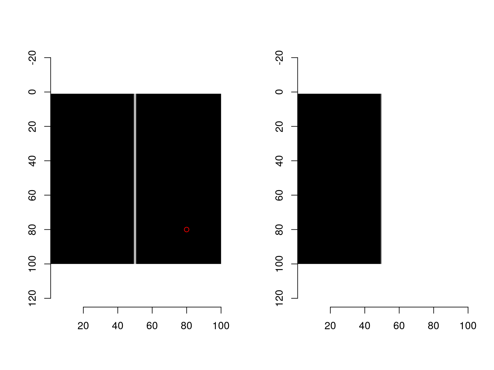
For the bucket fill trick to work we need to be able to spread the value of strong pixels to their weak neighbour (but not elsewhere). We assign different values to strong and weak pixels:
v <- strong
v[weak==1] <- .9 #Strong pixels have value 1, weak .9, and the rest are 0.Finally we need to go through the list of seed pixels, and apply bucket fill every time. We could write a loop, but to keep with the functional style we have used so far we’ll cast this operation as a fold, using reduce from the purrr package. reduce takes a function of two arguments (an accumulator and an item), and reduces a list to a single item by accumulating. It’s best illustrated by example:
library(purrr)##
## Attaching package: 'purrr'## The following object is masked from 'package:magrittr':
##
## set_names## The following object is masked from 'package:plyr':
##
## compactadd <- function(l) reduce(l,function(acc,item) acc+item,.init=0)
add(1:3) #equals sum(1:3)## [1] 6mult <- function(l) reduce(l,function(acc,item) acc*item,.init=1)
mult(1:3) #equals prod(1:3)## [1] 6#put the three colour channels side-by-side
imsplit(boats,"c") %>% reduce(function(acc,l) imappend(list(acc,l),"x")) %>% plot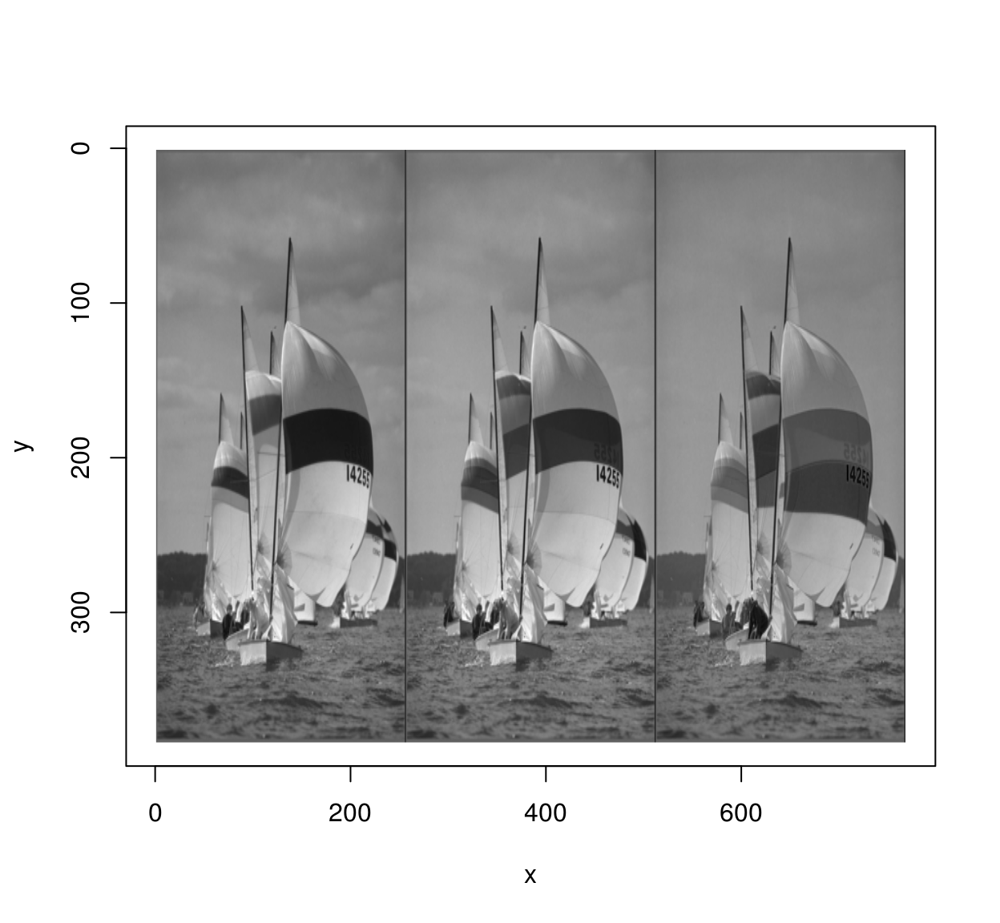
#Gives a set of initial locations for the bucket fill
fillInit <- function(strong)
{
lab <- label(strong,TRUE)*strong
as.data.frame(lab) %>% dplyr::filter(value > 0) %>% dplyr::group_by(value) %>% dplyr::summarize(x=x[1],y=y[1])
}
#Starts a fill at each successive location, and accumulates the results
rescueFill <- function(strong,weak)
{
v <- strong
v[weak==1] <- .9
#Transform the data.frame into a list of locations
loc <- dplyr::select(loc,-value) %>% transpose
#Fold
out <- reduce(loc,function(v,l) bucketfill(v,l$x,l$y,color=1,sigma=.1,high=TRUE),
.init=v)
as.cimg(out==1)
}
canny2 <- rescueFill(strong,weak)
all.equal(canny,canny2)## [1] TRUEThe second function is much faster, at least on this image (for this particular choice of thresholds):
system.time(hystFP(list(strong=strong,weak=weak)))## user system elapsed
## 0.832 0.000 0.830system.time(rescueFill(strong,weak))## user system elapsed
## 0.028 0.004 0.030A full implementation of the canny edge detector is below:
nonmax <- function(gr)
{
mag <- with(gr,sqrt(x^2+y^2))
ang <- with(gr,atan2(y,x))
grs <- list(x=gr$x/mag,y=gr$y/mag)
nX <- Xc(im) - gr$x/mag
nY <- Yc(im) - gr$y/mag
val.bwd <- interp(mag,data.frame(x=as.vector(Xc(im)-grs$x),
y=as.vector(Yc(im)-grs$y)))
val.fwd <- interp(mag,data.frame(x=as.vector(Xc(im)+grs$x),
y=as.vector(Yc(im)+grs$y)))
throw <- (mag < val.bwd) | (mag < val.fwd)
mag[throw] <- 0
mag
}
cannyEdges <- function(im,t1,t2,method="fp")
{
mag <- imgradient(im,"xy") %>% nonmax
strong <- as.cimg(mag>t2)
weak <- as.cimg(mag %inr% c(t1,t2))
if (method=="fp")
{
browser()
hystFP(list(strong=strong,weak=weak))$strong
}
else if (method=="bucket")
{
rescueFill(strong,weak)
}
}